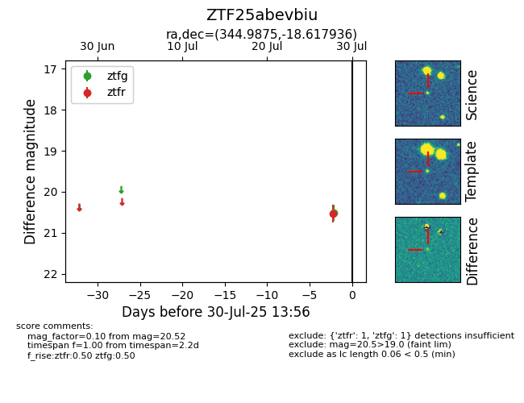

Target ZTF25abevbiu at 2025-07-30 13:56, see:
FINK: fink-portal.org/ZTF25abevbiu
Lasair: lasair-ztf.lsst.ac.uk/objects/ZTF25abevbiu
ALeRCE: alerce.online/object/ZTF25abevbiu
alt names
ZTF25abevbiu (ztf,fink)
coordinates:
equatorial (ra, dec) = (344.9875,-18.61794)
galactic (l, b) = (45.3877,-63.01791)
photometry
last ztfg=20.52, ztfr=20.52
1 ztfg, 1 ztfr detections
